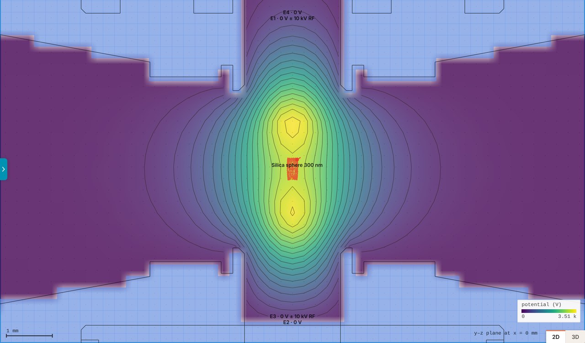
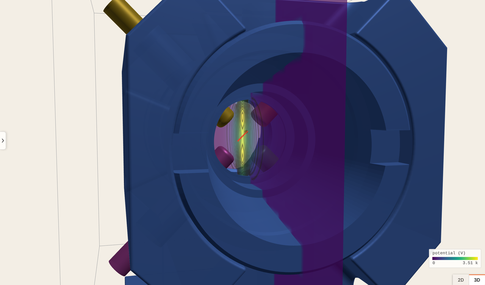
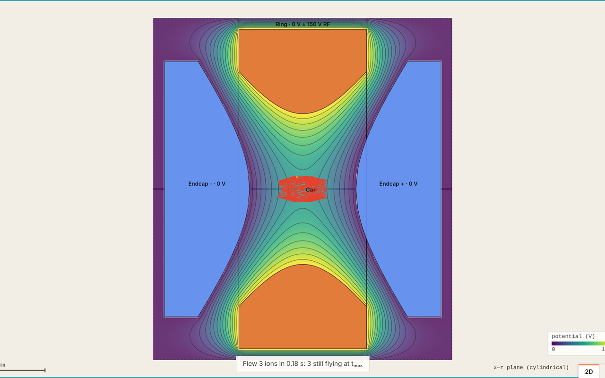
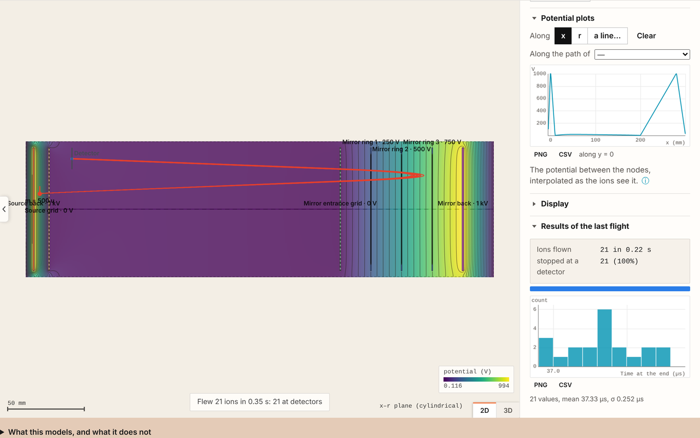
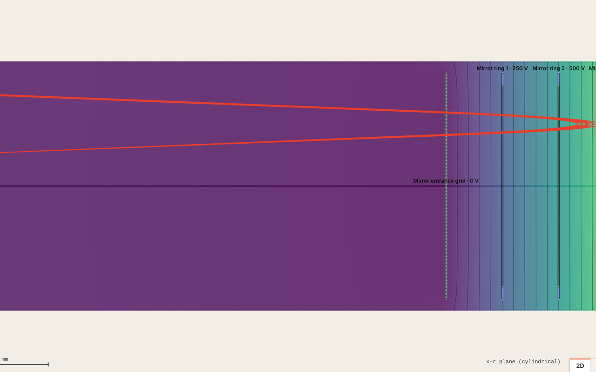
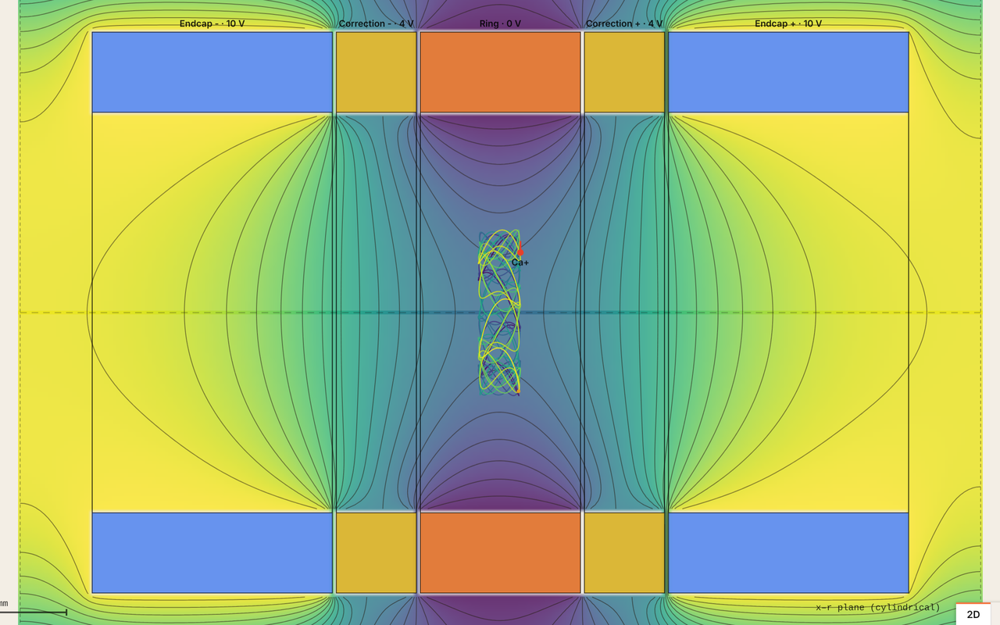
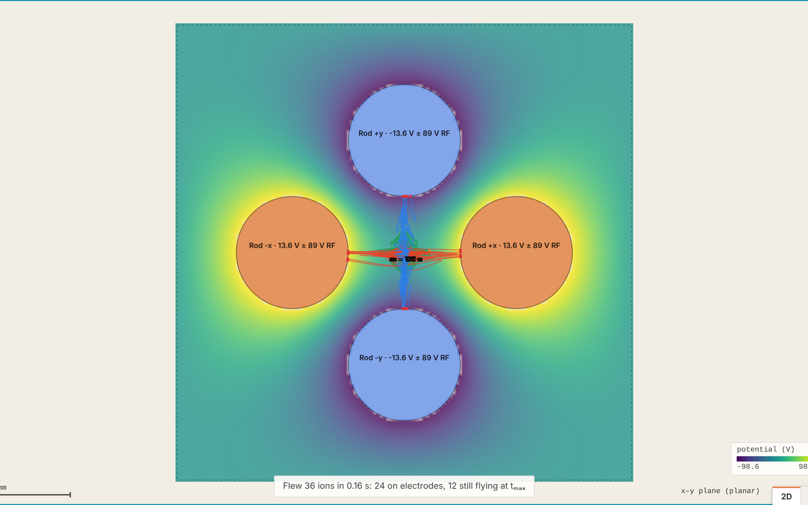
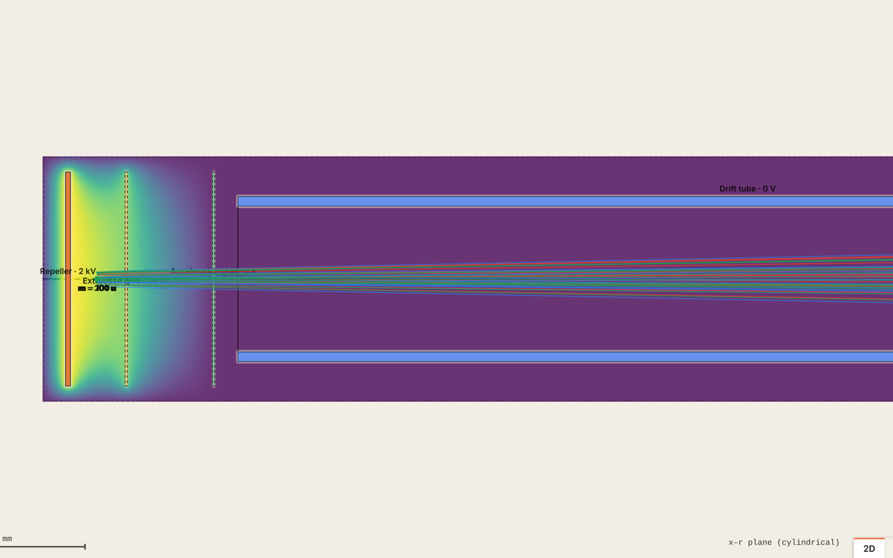
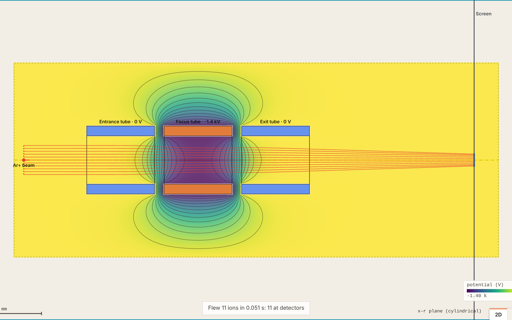

A simulator for charged-particle traps.
Bring a trap’s electrodes in from CAD, and the field is solved and the particles flown as you work. Read off where the trap holds, how stiffly, and whether the drive is stable.

The trap as it was drawn
Drop a STEP or STL file on the bench and each body becomes an electrode, found on the grid by winding along three axes so thin blades and bores come through. Set each electrode’s DC and RF, the amplitude, frequency and phase, and the housing stays at ground. The array’s spacing is yours to set: fine where the tips are, as coarse as the housing allows.

Fields and flight
The potential is solved by multigrid in planar, cylindrical or three-dimensional symmetry, once per electrode, so a voltage changes the picture at once. Particles of any mass and charge are flown by an adaptive Runge–Kutta step with a continuous field between the nodes, so a quadrupole’s null is a true null. A background gas cools them by hard-sphere collisions; space charge pushes a cloud apart.

Potentials you can read
The cut through the array shows the potential as a map, as equipotentials or as the field strength, in any plane and in 3D. Plot the potential along x, y or z through the analysis point, along any line picked on the bench, or along a flown particle’s path against time. Every plot and the flight’s records export as CSV, JSON, Excel, NumPy or MATLAB.

Beam optics too
The same engine flies a beam through a lens, a deflector, a time-of-flight or a mass filter, with detectors recording position, time, energy and direction. The examples include each, and the trap analysis reads a mass filter’s a and q as readily as a trap’s.

Examples
Each opens in JEKion, solved and flown. Click an electrode for its settings; Tools › Trap analysis reads the trap.
Paul trap
A hyperbolic ring and endcaps, 150 V of RF at 1 MHz: three Ca⁺ held at the centre. At 200 V, q passes 0.908 and they are lost.

Penning trap
A cylindrical trap in 1 T: the magnetron, modified cyclotron and axial motions of one Ca⁺, their frequencies read by the analysis.

Quadrupole mass filter
RF and DC set so mass 100 sits in the stability tip: it passes, and masses 12% either side hit the rods.

Linear time-of-flight
A two-stage source and a drift tube: masses 100, 101 and 200 u separate as √m; the source’s width sets the resolution.
Reflectron
An ion mirror after the drift: one mass with a spread of energies refocuses in time at the detector.

Einzel lens
Three tubes, the middle one negative: a 2 keV Ar⁺ beam focused to a point. Change the voltage and the focus moves.
One account for both tools
JEKion is free under the JEKion Licence, with no account. A free JEKray account lets you export pictures and data and open your cloud benches, and JEKrayPro adds benches that save to the cloud as you work with their history and forks, short share links, scripts run against the bench and the richer exports (Excel, NumPy, MATLAB, everything at once). JEKray and JEKion share the cloud: My benches holds both tools’ benches, each marked, and opens each in its own tool. A subscription taken out in JEKray serves both.